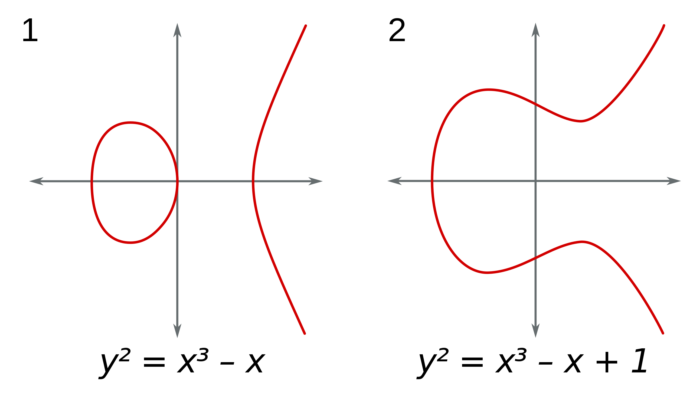
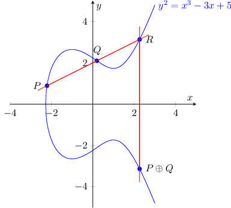
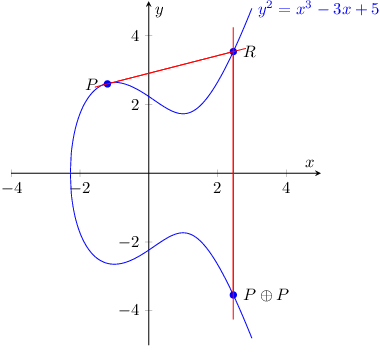

Understanding ECDSA: From Elliptic Curves to Digital Signatures(Part 1)
1. Basic Definition
An elliptic curve is defined by the equation:
1 | y² = x³ + ax + b |
Where constants a and b must satisfy 4a³ + 27b² ≠ 0 to ensure the curve has no singularities.
Typical elliptic curves look like these👇
2. Key Operations on Elliptic Curves
2.1 Point Addition
When we add two distinct points P and Q on an elliptic curve, we get a third point P + Q also on the curve.
Geometric Process:
- Draw a line through points P and Q
- Find where this line intersects the curve at a third point
- Reflect this intersection point across the x-axis to get P + Q
Algebraic Formula: If P = (x₁, y₁) and Q = (x₂, y₂), then P + Q = (x₃, y₃) where:
1 | λ = (y₂ - y₁)/(x₂ - x₁) |
2.2 Point Doubling
When we add a point to itself (P + P = 2P), we use the tangent line at point P.
Geometric Process:
- Draw the tangent line at point P
- Find where this tangent intersects the curve
- Reflect this intersection point across the x-axis
Algebraic Formula: If P = (x₁, y₁), then 2P = (x₃, y₃) where:
1 | λ = (3x₁² + a)/(2y₁) |
Show Mathematics
The tangent line at a point on an elliptic curve is calculated using differential calculus.
For an elliptic curve with equation y² = x³ + ax + b, to find the tangent at point P = (x₁, y₁):
- Treat the curve equation as an implicit function F(x,y) = y² - x³ - ax - b = 0
- Apply the implicit function differentiation formula: dy/dx = -∂F/∂x ÷ ∂F/∂y
Computing the partial derivatives:
∂F/∂x = -3x² - a
∂F/∂y = 2y
Therefore, the slope of the tangent line is:
λ = dy/dx = (-(-3x² - a)) ÷ 2y = (3x² + a) ÷ 2y
For point P = (x₁, y₁), the tangent slope is:
λ = (3x₁² + a) ÷ 2y₁
This is the formula used in your code for point doubling. This slope determines where the tangent line intersects the curve at a third point, which is then reflected across the x-axis to obtain 2P.
2.3 Scalar multiplication
Scalar multiplication computes kP (P added to itself k times) for a point P and an integer k.
Example:
- 3P = P + P + P = P + 2P
- 4P = 2P + 2P
- 5P = 4P + P
For efficiency, we use the “double-and-add” algorithm, which works by scanning the binary representation of k:
In binary representation, if we have k = (bₙ₋₁…b₁b₀)₂, then:
kP = b₀·P + b₁·2P + b₂·2²P + … + bₙ₋₁·2ⁿ⁻¹P
This formula means: if the scalar k is expressed as a binary number, then the scalar multiplication kP can be represented as a combination of different powers of P (P, 2P, 4P, 8P…), where each term is included only if the corresponding bit in the binary representation of k is 1.
This reduces the number of operations to O(log k), making it much more efficient.
4. Elliptic Curves over Finite Fields
In cryptography, we use elliptic curves over finite fields, typically prime fields GF(p). The equation becomes:
1 | y² ≡ x³ + ax + b (mod p) |
All coordinates and calculations are performed modulo p, creating a finite set of discrete points.
5. The Discrete Logarithm Problem
The security of elliptic curve cryptography is based on the hardness of the Elliptic Curve Discrete Logarithm Problem (ECDLP):
Problem statement: Given points P and Q on an elliptic curve where Q = kP, find the scalar k.
5.1 Why is it difficult?
While computing Q = kP (scalar multiplication) is relatively straightforward, the reverse problem is computationally infeasible for well-chosen curves with large parameters because:
- No Direct Inverse Operation: There’s no “division” operation that can efficiently compute k given P and kP.
- Discrete Nature: Unlike continuous functions, the relationship between inputs and outputs doesn’t follow a smooth pattern that can be analyzed mathematically.
- Large Search Space: For a curve with order n (approximately the size of the field p), there are about n possible values for k. With 256-bit curves, this means approximately 2²⁵⁶ possibilities.
- No Known Shortcuts: The best algorithms for solving ECDLP (like Pollard’s rho) still require approximately √n operations, which is still exponential in the bit length of n.
6. A Simple Rust Implementation.
1 |
|